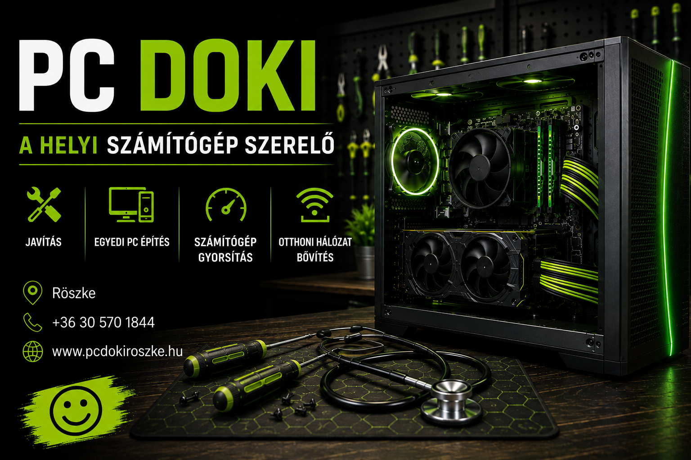

Műszaki diagnosztika, javítás, optimalizálás – Röszkén és környékén.
Gyors és megbízható szerviz
Egyedi konfiguráció igényeid szerint
Nagyobb teljesítmény könnyedén
PC Doki Garancia
Katona László – informatikai rendszergazda és számítógép szerelő
Közel 10 éve foglalkozom telekommunikációs rendszerek üzemeltetésével, vezeték nélküli hálózatok telepítésével, WiFi optimalizálással, PC-k és laptopok szakszerű szervizelésével. Gamer és irodai PC-k összeállítását és bővítését is vállalom, személyre szabottan.
Ha gyorsabb, stabilabb rendszert szeretnél – vagy számítógéppel kapcsolatos problémáid vannak – jó helyen jársz.
Tisztítás, gyorsítás, szerviz
Új gép vagy régi felgyorsítása
Fotók, dokumentumok helyreállítása
Router beállítás, jelerősség javítás
Tiszta telepítés, driverek, frissítések
Telepítés, hálózati megosztás
Modern, gyors, mobilbarát honlapok
Hirdetések, SEO, közösségi média
Minden ár alanyi adómentes (AAM), tájékoztató jellegű.